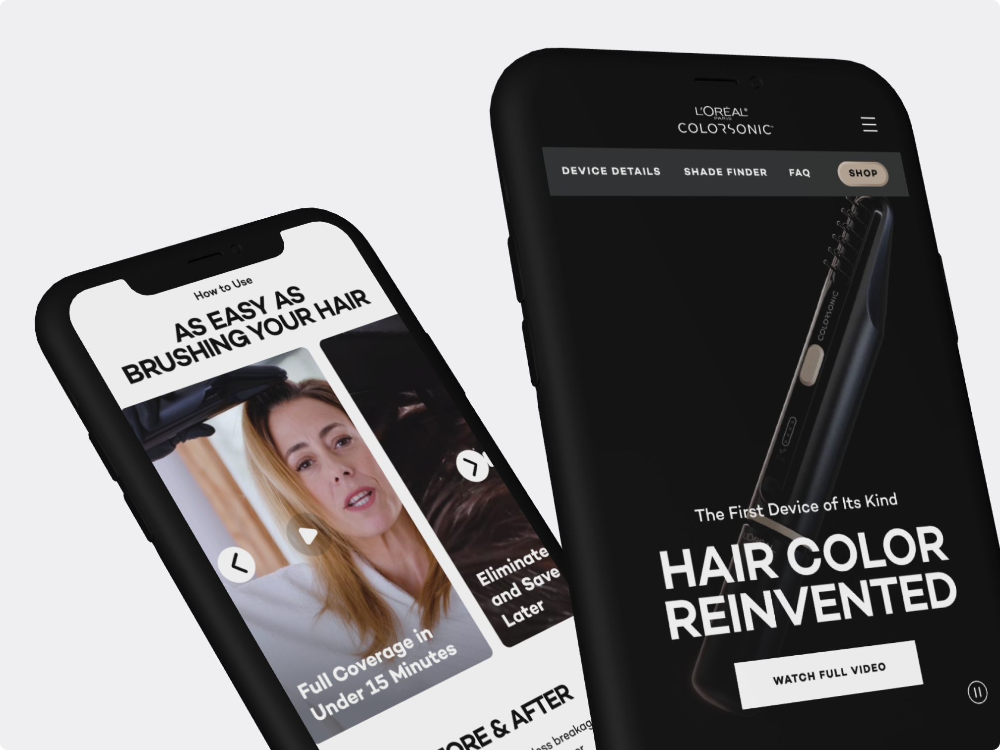
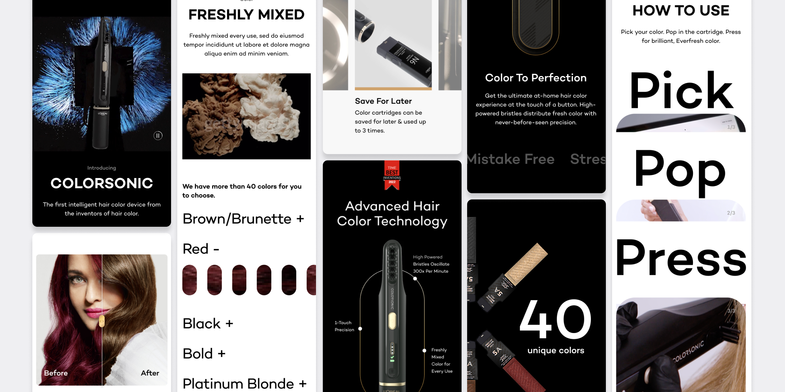
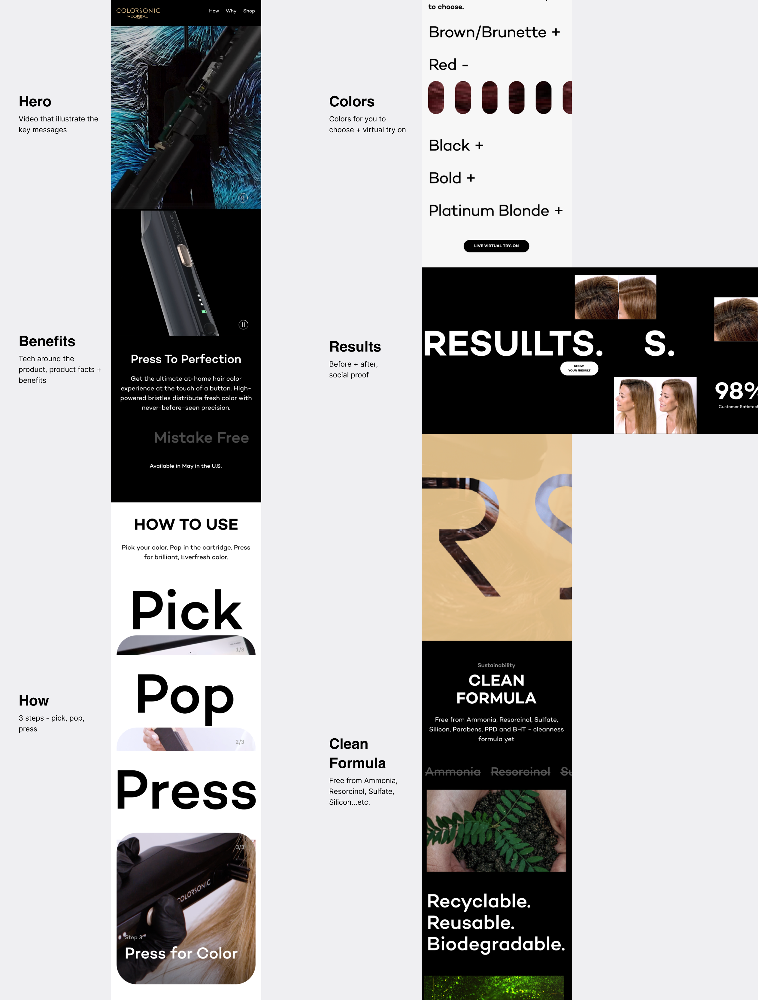
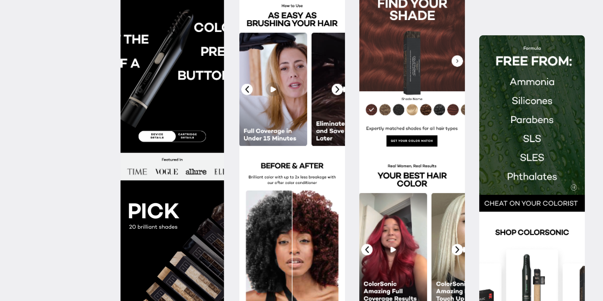
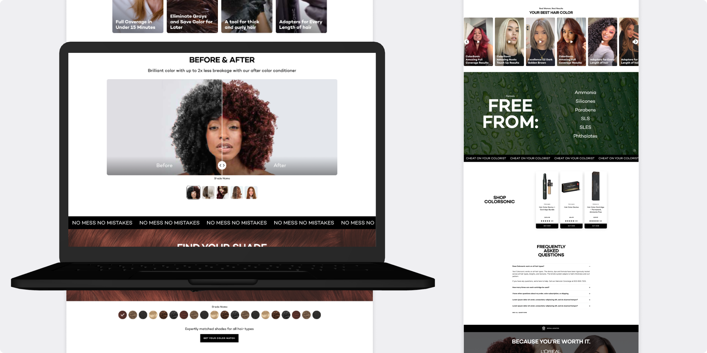

Colorsonic
Explore the first-of-its-kind hair color device through a phygital experience

Overview
Colorsonic is an at-home hair color device developed by L'Oréal Paris. The task was to create a digital-first, elevated consumer experience to successfully launch the device.
I assisted in the request for proposal (RFP) phase by exploring and establishing the design direction, as well as building and prototyping the full pages for both mobile and desktop, which led us to win the bid.

Challenge
Facing time and resource constraints, we deviated from the usual design process. To meet the RFP deadline, we quickly defined the basic page structure, selected key features, and moved into visual design ASAP.

Design Validation
With the client's approval, the team developed a test plan to gather first impressions on the proposed landing page. We learned that several modules were not found helpful and were confusing to users. As a result, we iterated our design through several rounds based on user feedback.

Hi-fi Prototype
We refined the design features and user flows with high-fidelity prototyping. It helped get better user feedback, validate the final design, and help devs build faster with fewer product development iterations.

Outcome + Impact